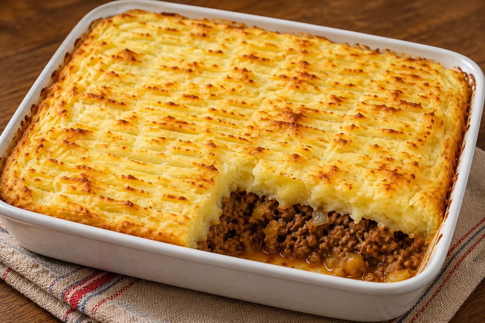

Home
Pastel de Papas Recipe

Description
Pastel de papas (potato cake) is Argentina's version of shepherd's pie. A layer of seasoned beef mince, studded with olives and slices of hard-boiled egg, topped with creamy mashed potato and baked until the top is golden. It is cold-weather cooking at its most comforting.
The filling is essentially the same as an empanada filling. Ground beef, onion, capsicum, paprika, cumin, olives, sometimes raisins. The difference is scale and format. Pastel de papas is one big family dish. Empanadas are individual portions. This recipe makes enough for 6 to 8. It reheats beautifully the next day, and freezes well in portions for weeknight dinners later in the month.
Ingredients
For the filling
- 800 g beef mince, good quality (12% fat)
- 2 large onions, finely diced
- 1 red capsicum, finely diced
- 4 cloves garlic, minced
- 2 tbsp sweet paprika
- 1 tsp ground cumin
- 1 tsp dried oregano
- 2 tbsp tomato paste
- 150 ml beef stock (or water)
- 100 g green olives, pitted and sliced
- 4 hard-boiled eggs, sliced
- 3 tbsp olive oil
- Salt and black pepper to taste
For the potato topping
- 1.5 kg floury potatoes (Desiree or Sebago)
- 80 g butter
- 200 ml warm milk
- 1 egg yolk (optional, for richer topping)
- Salt, pepper, pinch of nutmeg
Steps
- Start the potatoes: Peel and chop the potatoes into even chunks. Place in cold salted water and bring to the boil. Simmer for 15 to 20 minutes until tender. Drain thoroughly.
- Make the filling: While the potatoes cook, heat the olive oil in a large pan over medium heat. Add the onions and capsicum, cook for 10 minutes until soft. Add the garlic, cook 1 minute more.
- Brown the meat: Increase the heat to high. Add the beef mince and break it up with a wooden spoon. Cook for 5 to 7 minutes until browned. Drain off excess fat if there is a lot.
- Add spices and stock: Stir in paprika, cumin, oregano, tomato paste, and beef stock. Season generously with salt and pepper. Simmer for 10 minutes until the sauce has reduced and thickened. Remove from heat and stir through the olives.
- Mash the potatoes: Mash the cooked potatoes with butter, warm milk, salt, pepper, and nutmeg. For a richer topping, beat in the egg yolk. You want a smooth, creamy mash that is firm enough to hold its shape.
- Assemble: Preheat oven to 200°C. Spread the beef mixture in the bottom of a 2 L baking dish. Layer the hard-boiled egg slices evenly on top. Cover with the mashed potato, spreading to the edges. Use a fork to create rough peaks across the top.
- Bake: Bake for 25 to 30 minutes until the top is deeply golden and the filling is bubbling at the edges. If the top is not browning enough, finish under the grill for 2 to 3 minutes.
- Rest and serve: Rest for 10 minutes before serving. This lets the filling firm up so it cuts cleanly.